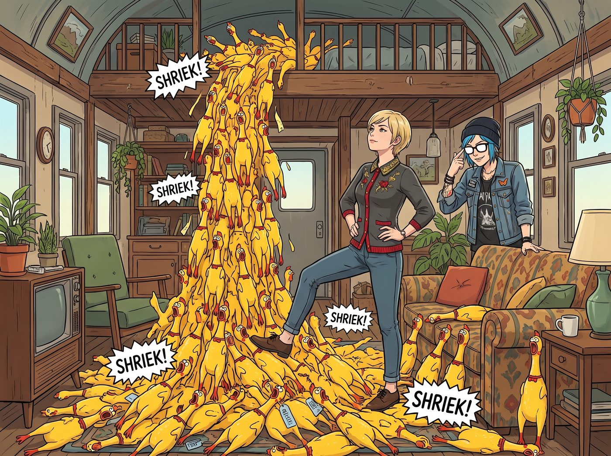
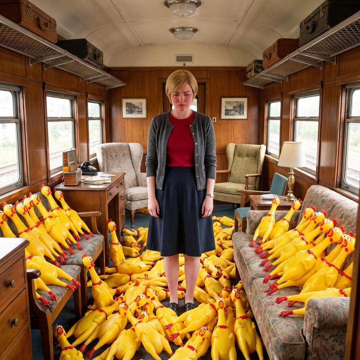

去中心化聲學預警矩陣


兩天後，一個由重型無人機空投的巨大紙箱，重重地砸在了二號車廂外的空地上。
當 Chloe 拿著軍用匕首興奮地劃開膠帶時，整整兩百隻顏色極度刺眼、散發著廉價塑膠味、稍微一捏就會發出淒厲慘叫的尖叫雞，像瀑布一樣湧了出來。
為了實踐自己對無用之物合法性的捍衛，街頭霸王不僅買了，還精心策劃了一場針對老錢階級的物理部署。
一、兵馬俑軍隊
當 Victoria 敷著早晨的冰鎮眼膜，優雅地端著黑咖啡走出臥室時，她的腳步瞬間凝固了。
在她那張價值一萬兩千美金的波斯地毯周圍、她的鉑金包旁邊、甚至她那台專屬的手沖咖啡機上，密密麻麻地列陣著幾十隻死魚眼、張著大嘴的塑膠尖叫雞。它們看起來就像是一支從小商品批發市場穿越而來的兵馬俑軍隊。
「Chloe Price……」Victoria 的額頭青筋暴跳，她甚至懶得生氣，只是發出了一聲極度輕蔑的冷笑，「我早就說過，妳那匱乏的階級審美只配在垃圾堆裡打滾。妳以為用妳那點可憐的零用錢買一堆化學廢料來污染我的視線，就能激怒我嗎？隨妳的便，反正燒的是妳自己的錢，低等動物的無能狂怒罷了。」
Victoria 高傲地揚起下巴，準備跨過那堆尖叫雞。
二、三腳貓的畫餅
「咳咳。」就在這時，Chloe 從沙發後面站了起來。她不知從哪裡翻出了一副沒有鏡片的黑框眼鏡戴在臉上，然後，她伸出食指，以一種極其做作、完美復刻了實習生 Lily 的姿勢，推了推鼻樑上的鏡框。
「Victoria 學姐，請容許我糾正您在資產評估上的致命盲區。」Chloe 開口了。她刻意壓低了嗓音，試圖模仿 Lily 那種軟糯卻充滿壓迫感的語氣，但骨子裡那股街頭混混的囂張卻怎麼也藏不住。
「首先，這不是化學廢料。這是一套去中心化模擬聲學預警矩陣。」
Victoria 跨出去的腳停在了半空中。她瞪大眼睛，看著眼前這個滿嘴黑話的藍髮太妹，彷彿見到了鬼。
Chloe 開始雙手背在身後，在尖叫雞陣列中踱步，一本正經地開始了她的畫餅與瞎扯：「鑒於最近安保威脅升級，我意識到我們的安保系統過度依賴數位網路。一旦敵人使用電磁脈衝武器，Lily 的雷達就會癱瘓。但我的這套系統，完全是純物理觸發的！只要有武裝人員踩上去，它們就會瞬間爆發出高達一百二十分貝的無差別高頻慘叫，完美實現了物理級別的防空警報！」
「妳……妳在胡說八道些什麼……」Victoria 試圖反駁，但大腦正在被這堆突如其來的合規術語瘋狂轟炸。
三、精準的信託掛帳
「還沒完呢，Chase 小姐。」Chloe 步步緊逼，眼神裡閃爍著狡黠的光芒，「從財務工程的角度來看，這是一筆高淨值情緒沉沒成本的具象化投資。我將它定義為探討現代資本主義虛無的裝置藝術。而且，最重要的是——」
Chloe 露出了一個極度惡劣的笑容：「我買這兩百隻雞的時候，利用了 Mr. V 給我的無國界白名單。我把這筆帳單，以環境聲學藝術贊助的名義，精準地掛載了妳名下那個次級慈善信託帳戶上。所以，在聯邦稅務局的帳本裡，這支尖叫雞軍隊，是您親自出資購買的合法免稅資產。」
車廂裡死一般的寂靜。
Victoria 呆呆地看著腳下那隻彷彿在嘲笑她的塑膠雞。去中心化預警矩陣、裝置藝術、慈善信託免稅，這些她平時在商學院和董事會上聽到耳朵長繭的高級詞彙，此刻被 Chloe 用一種極度粗暴的街頭邏輯縫合在一起，竟然產生了一種讓她無法反駁的詭異自洽感。
如果她承認這是垃圾，就等於承認自己的信託帳戶買了垃圾；如果她不承認這是垃圾，她就得吞下這套聲學預警矩陣的鬼話。
名媛的CPU，在此刻被街頭霸王的三腳貓合規話術給徹底幹燒了。
「妳……妳這個無恥的智商騙子……」Victoria 咬牙切齒，憋了半天，最終只能絕望地指著地毯邊緣，「把它們……把它們給我排整齊一點！如果有一隻敢倒在我的包包上，我就把妳們兩個一起扔進焚化爐！」
她收貨了。她居然真的捏著鼻子接受了這支尖叫雞軍隊。
「承讓，學姐。」Chloe 得意地打了一個響指。
四、B+的評分
角落裡，真正的行政黑魔法師 Lily 正端著熱牛奶，將這一幕盡收眼底。
「名目包裝雖然略顯生硬，且聲學預警的實體防禦邏輯存在百分之三十的偽科學成分，」Lily 推了推圓框眼鏡，給出了一份極其專業的評估報告，「但 Price 學姐成功利用了資本家對稅務豁免與資產合理化的天然妥協性，實現了完美的邏輯閉環與風險轉嫁。我給這套話術打B+。」
Max 抱著相機笑得倒在沙發上，順手拍下了 Victoria 滿臉屈辱地站在一堆尖叫雞中間的歷史性畫面。
這時，Kate 端著剛洗好的草莓走出來。「哇，Chloe，妳買了這麼多可愛的玩具小雞呀！」小天使的聖光再次普照大地，「把它們擺在 Victoria 的房間門口，就像是一群盡職的小衛兵，每天早晨都會用充滿活力的聲音叫她起床呢。Victoria 一定很感動吧？」
Victoria 聽著這句話，腳下一軟，不小心踩中了一隻尖叫雞。
「嗷——！！！」淒厲的塑膠慘叫聲在車廂裡迴盪。
看著名媛崩潰捂住耳朵的樣子，Chloe 和 Max 擊了個掌。在這個廢土車廂裡，活學活用行政黑魔法來對付資本家，顯然已經成為了街頭霸王最新的娛樂項目。